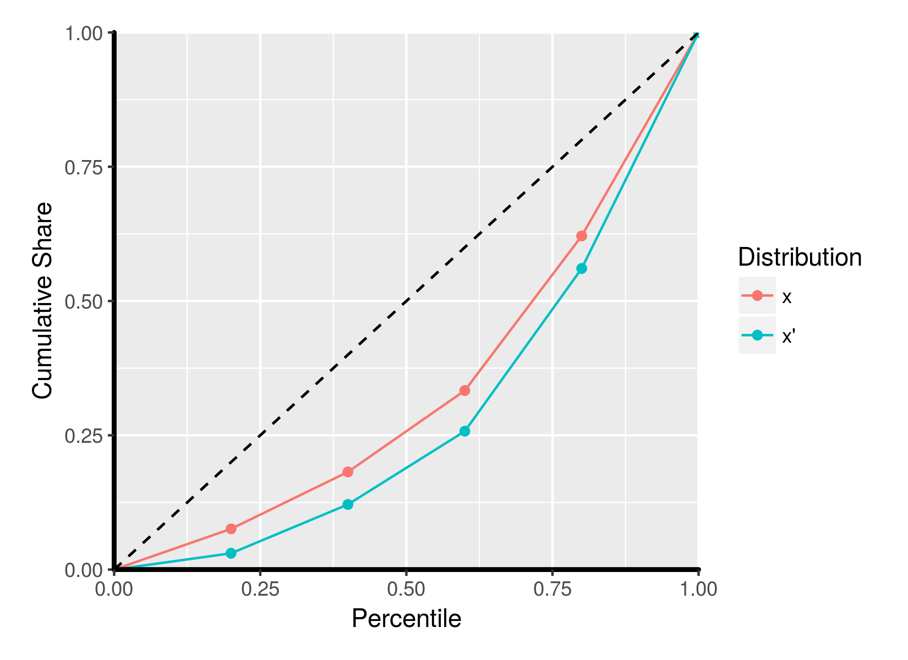
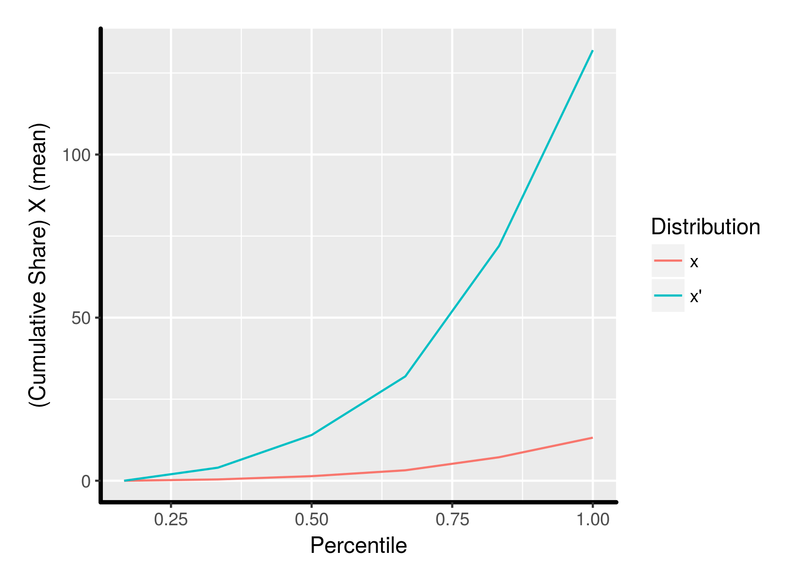

Normative Theory
ECON 499: The Economics of Inequality
Winter 2018
### Readings (on Canvas):
- Atkinson section 3.4
- [Sen (1979)](http://www.ophi.org.uk/wp-content/uploads/Sen-1979_Equality-of-What.pdf) *(recommended)*
### Normative theory
- We have seen various ways to measure inequality and different properties of measures
- Indices can disagree with one another!
- Can we project our personal (or societal) values onto different distributions?
- When can we say that one distribution is *better* or *worse* than another?
### Positive vs normative
- Much of economics can be broken down into *normative* vs *positive* analysis
- Positive claims can be verified, normative claims reflect values
- Positive claim: The Gini index for the US in 2016 was 45.0
- Normative claim: The Gini index for the US should be lower
### Normative theory
- Start with a set of values, then see what the implications of those values are
- Alternatively: Start with result, then see what kind of values we would need to have to make that result hold
- What sort of preferences might *rationalize* certain statements about inequality?
### Economic agents
- We assume people derive utility from their consumption of goods and services
- The more goods and services people are able to choose from, the better off they are
- Additional income increases the choice set, more goods and services available to consume
- Income creates *indirect* utility
- $u(x_i)$ is the indirect utility derived from an income of $x_i$
### Utility and social well-being
- Idea: Since utility measures well-being, can we use it to compare income distributions?
- Can the utility of individuals within the income distribution help inform which distributions are preferable?
### Diminishing marginal utility of income
- Our enjoyment of additional income gets lower as our income gets higher
- I'd be extremely happy if someone gave me \$100 --- Mark Zuckerberg probably wouldn't care very much
- We should weigh lower incomes more heavily than higher incomes
### Utilitarianism
- The optimal distribution of income may be achieved by maximizing aggregate utility
- Same as equating marginal utility for each person
- Each additional unit of income will go to the person who will "enjoy" it the most
### Problems
- Utility functions are not unique (ECON 311). Which do we choose?
- People can have vastly different marginal utilities of income
- [Sen:](http://www.ophi.org.uk/wp-content/uploads/Sen-1979_Equality-of-What.pdf) Consider a person who experiences a physical disability. They will derive less utility from a given level of income, since they have fewer opportunities to spend that money
- Compare that person to a "pleasure-wizard" who derives large satisfaction from small increases in income
### Social welfare
- Utility only measures well being from your own income
- People care about the income of other people
- We can capture this with a *social welfare function*
- A SWF is like a utility function for society as a whole
- Rather than think of the utility derived from one income, we think of the total utility that is gained from everyone at all points in the distribution
||
|:-:|
|$W(x) = W(x_1 + x_2 + ... + x_N)$|
### Rawlsian SWF interpretation
- John Rawls (1971): Think about distributions from behind a "veil of ignorance"
- Before you are born, you get to choose which society you live in
- You have an equal chance of being born anywhere within that society
- Societies with high inequality mean that there is a higher risk of being poor
- The SWF is therefore just a measure of *risk-aversion* --- how much of a gamble are you willing to take?
### Von-Neumann-Morgenstern Utility
- People have preferences over outcomes that occur probabilistically
- With certain assumptions on preferences (similar to 311 rationality assumptions), we can order preferences over risk
||
|:-:|
|$U(x, p) = p_1u(x_1) + p_2u(x_2) + ... + p_Nu(x_N)$|
### Risk aversion
- Agents are *risk averse* if they are willing to take an expected loss to avoid uncertainty
- This occurs whenever agents have diminishing marginal utility of income
### CRRA Utility
- If an agent's risk aversion is constant for any level of income, then we say that they have *constant relative risk aversion*
- Utility can be represented as
||
|:-:|
|$u(y) = \frac{y^1-\epsilon}{1-\epsilon}$|
- $\epsilon$ is the amount of risk aversion
- This is the *same* $\epsilon$ from the Atkinson measure!
Atkinson measure, revisited
$$ I_A(x, \epsilon) = 1 - \left(\dfrac{1}{N}\sum_{i=1}^N\left(\dfrac{x_i}{\mu}\right)^{1-\epsilon}\right)^{\frac{1}{1-\epsilon}} $$
- A person with CRRA utility (given $\epsilon$) will always prefer a distribution with a lower Atkinson index!
### Inequality aversion
Another way to interpret $\epsilon$:
- Imagine we are going to transfer \$100 from a rich person to a poor person
- We put the money (coins) in a bucket to bring to the poor person
- The bucket has a hole, and the money slowly falls out in transit
- How much money are we prepared to lose before we decide not to go through with the transfer?
### Leaky bucket interpretation
#### Distribution A
|| Obie | Michael | Llewelyn | Rudy | Kitty |
|---:|:---:|:---:|:---:|:---:|:---:|
|$x:$|2|5|9|20|30|
||
#### Take 10 from Kitty to give to Obie, but we lose $\delta\times 10$ along the way:
---
#### Distribution B
|| Obie | Michael | Llewelyn | Rudy | Kitty |
|---:|:---:|:---:|:---:|:---:|:---:|
|$x':$|**$2+(10-\delta\times 10)$**|5|9|20|**$30-10$**|
### Leaky bucket interpretation
- $\delta = 0$: Obie gets all of the transfer
- $\delta = 1$: Obie gets none of the transfer
- What is the highest value of $\delta$ that we are willing to have?
- $\delta$ is our measure of *inequality aversion*
- $\epsilon = \frac{1}{2\delta}$

Data from 1970! Much different today.
### Social choice theory
- Level of risk aversion matters for how we rank distributions
- How can we agree on which aversion parameter to use as a society?
- Do we even agree that we have CRRA?
- Arrow's Impossibility Theorem: Under certain (general) conditions, it's impossible to find a "best" social welfare function!
- Can we say anything about more general utility specifications?
### Lorenz domination
- A distribution $x$ is said to *Lorenz dominate* distribution $x'$ if the Lorenz curve for $x$ is above $x'$
Example:
$$x=(5,7,10,19,25)$$
$$x' = (2,5,9,20,30)$$

$$x~ \text{Lorenz dominates} ~ x'$$
### Atkinson theorem
Suppose $x$ and $x'$ are two distributions with the same mean. Any risk-averse person (diminishing marginal utility of income) will *always* prefer a society with distribution $x$ if $x$ Lorenz dominates $x'$.
- A SWF that weighs the incomes of poorer people more heavily than richer people will be greater under $x$
### Example
#### Distribution A
|| Obie | Michael | Llewelyn | Rudy | Kitty |
|---:|:---:|:---:|:---:|:---:|:---:|
|$x:$|2|5|9|20|30|
|Cumulative income:|2|7|16|36|66|
|Cumulative share:|0.03|0.11|0.24|0.54|1|
|$~$|
---
#### Distribution B
|| Obie | Michael | Llewelyn | Rudy | Kitty |
|---:|:---:|:---:|:---:|:---:|:---:|
|$x':$|20|50|90|200|300|
|Cumulative income:|20|70|160|360|660|
|Cumulative share:|0.03|0.11|0.24|0.54|1|
|$~$|
### Generalized Lorenz curves
- The Atkinson theorem doesn't hold if the mean is not the same
- What happens if average income doubles, but inequality is slightly worse?
- We can instead use *generalized Lorenz curves*, which are formed by multiplying the cumulative share by the mean
### Generalized Lorenz example
#### Distribution A (mean = 13.2)
|| Obie | Michael | Llewelyn | Rudy | Kitty |
|---:|:---:|:---:|:---:|:---:|:---:|
|$x:$|2|5|9|20|30|
|Cumulative income:|2|7|16|36|66|
|Cumulative share:|0.03|0.11|0.24|0.54|1|
|Cum. share $\times$ mean:|0.4|1.4|3.2|7.2|13.2|
---
#### Distribution B (mean = 132)
|| Obie | Michael | Llewelyn | Rudy | Kitty |
|---:|:---:|:---:|:---:|:---:|:---:|
|$x':$|20|50|90|200|300|
|Cumulative income:|20|70|160|360|660|
|Cumulative share:|0.03|0.11|0.24|0.54|1|
|Cum. share $\times$ mean:|4|14|32|72|132|
Generalized Lorenz curves
$$x=(2,5,9,20,30)$$
$$x' = (20,50,90,200,300)$$

### Shorrocks Theorem
Suppose $x$ and $x'$ are two distributions. Any risk averse person (diminishing marginal utility of income) will always prefer a society with distribution $x$ if the generalized Lorenz curve for $x$ dominates that of $x'$
### Generalized Lorenz curves in the real world
- We can't compare distributions with the Shorrocks theorem if generalized Lorenz curves intersect
- Generalized Lorenz domination is not something we observe with great frequency in the real world
- In practice we must make more strict normative assumptions (i.e. level of risk aversion)